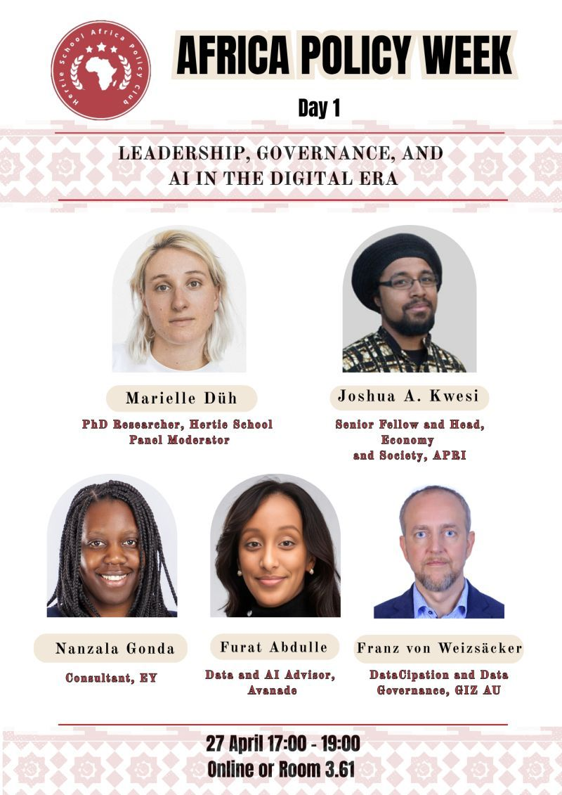

01
Kontext vor Abstraktion
Context before abstraction
Modelle sind Werkzeuge. Ihr Geltungsbereich muss sichtbar bleiben.
Models are tools. Their scope and limits should remain visible.
Mein Weg verbindet Philosophie, digitale Methoden, Data & AI, Organisationsarbeit, Kommunikation und öffentliche Räume. Daraus ist eine Perspektive entstanden, die technologische Veränderung weder nur technisch noch nur kulturell betrachtet.
My path connects philosophy, digital methods, Data & AI, organizational work, communication and public spaces. It has shaped a perspective that treats technological change as neither merely technical nor merely cultural.


Mein Denken bewegt sich zwischen Humanismus und Technologie, zwischen Organisationslogik und gesellschaftlicher Macht, zwischen konkreter Umsetzung und der Frage, welche Annahmen wir dabei überhaupt reproduzieren. Gerade bei AI reicht es nicht, Tools zu erklären. Entscheidend ist, wie Fachwissen, institutionelle Regeln, Urteilskraft und neue technologische Möglichkeiten zusammenwirken.
My thinking moves between humanism and technology, organizational logic and societal power, concrete implementation and the assumptions we reproduce along the way. With AI, explaining tools is not enough. What matters is how domain expertise, institutional rules, judgement and new technological possibilities interact.
Nicht als lineare Karrieregeschichte, sondern als zunehmende Verbindung von Wissen, Technologie, Organisation und öffentlicher Wirkung.
Not as a linear career story, but as an increasingly connected practice across knowledge, technology, organizations and public impact.
Fragen nach Wissen, Mensch, Bedeutung, Argumentation und Perspektive bilden die intellektuelle Grundlage.
Questions of knowledge, personhood, meaning, argument and perspective form the intellectual foundation.
Methodische Brücke zwischen Geisteswissenschaft, Daten, digitalen Systemen und neuen Forschungsformen.
A methodological bridge across the humanities, data, digital systems and new forms of inquiry.
Praktische Arbeit in Transformation, Enablement, Analytics und AI: dort, wo Modelle auf reale Prozesse, Rollen und Governance treffen.
Applied work in transformation, enablement, analytics and AI: where models meet real processes, roles and governance.
Speaking, Schreiben und kreative Formate erweitern die Arbeit um Narrativ, Resonanz und gesellschaftliche Übersetzung.
Speaking, writing and creative formats extend the work into narrative, resonance and public translation.
Keine Universalmodelle, sondern analytische Prinzipien für komplexe Kontexte.
Not universal models, but analytical principles for complex contexts.
Modelle sind Werkzeuge. Ihr Geltungsbereich muss sichtbar bleiben.
Models are tools. Their scope and limits should remain visible.
Technologie, Organisation, Macht und Wissen entstehen nicht getrennt voneinander.
Technology, organizations, power and knowledge do not emerge independently.
AI erweitert Möglichkeiten. Was sinnvoll ist, bleibt eine Frage von Kontext, Verantwortung und Zielen.
AI expands possibility. What is worth doing remains a question of context, responsibility and purpose.
Auch die eigene Analyse muss zum Gegenstand der Analyse werden.
The analysis itself must also become an object of analysis.
Ausgewählte Kontexte, in denen Tech, Policy, Community und Wissensvermittlung zusammenkommen.
Selected contexts where technology, policy, community and knowledge translation meet.


